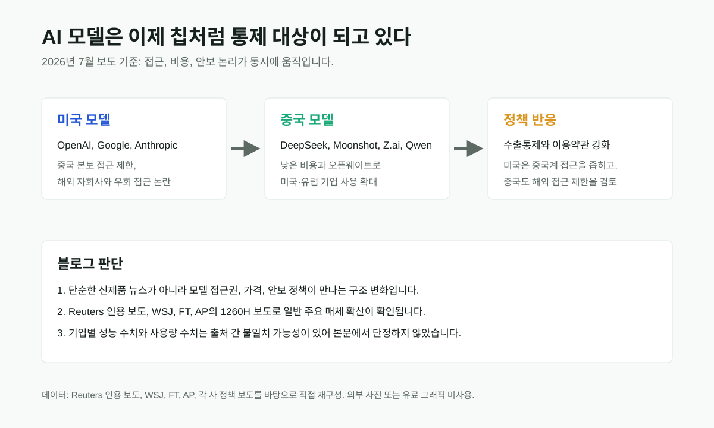

중국 AI 모델이 싸서 쓰는 시대, 동시에 막히는 시대
미국 기업들이 비용 절감을 위해 중국 AI 모델을 더 많이 검토하는 동안, 베이징은 첨단 모델의 해외 접근 제한을 논의하고 있다. 반대로 미국 AI 기업은 중국계 기업의 자회사·우회 접근을 더 강하게 막으려 한다. 이제 AI 모델은 소프트웨어 상품이면서 동시에 전략 물자처럼 취급된다.

핵심 요약
가격 경쟁과 안보 통제가 같은 방향으로 충돌한다
Times of India는 Reuters 소식통을 인용해 중국 상무부가 Alibaba, ByteDance, Z.ai 등과 해외 접근 제한 가능성을 논의했다고 보도했다. WSJ는 미국 기업들이 DeepSeek, Moonshot AI 같은 중국 모델을 비용 절감용 대안으로 쓰는 흐름을 다뤘다. FT는 중국 모델 사용 증가와 미국 AI 모델의 중국계 접근 논란을 별도 보도로 다뤘고, AP는 Alibaba와 Baidu 등이 미 국방부 1260H 명단에 오른 배경을 보도했다.
선정 이유
이 사안은 중국 AI 뉴스이면서 글로벌 AI 뉴스다. 한쪽에서는 저렴한 중국 모델이 기업의 AI 비용 압박을 낮추고, 다른 한쪽에서는 미국과 중국 모두 모델 접근을 좁히려 한다. 모델 성능 경쟁보다 더 큰 변화는 "누가 어떤 모델에 접근할 수 있는가"가 제품 기능이 아니라 정책 리스크가 된다는 점이다.
| 항목 | 점수 | 판단 근거 |
|---|---|---|
| 영향력 | 29/30 | AI 비용, 모델 라우팅, 수출통제, 기업 보안 정책이 한 번에 연결됨 |
| 일반 주요 매체 확산도 | 18/20 | Reuters 인용 보도, WSJ, FT, AP가 서로 다른 각도에서 반복 보도 |
| 신뢰도/출처 검증 | 18/20 | AP의 1260H 명단 보도와 주요 경제지·통신사 보도가 핵심 흐름을 상호 보강 |
| 새로움/중복 회피 | 8/10 | 기존 GLM-5.2 글과 일부 연결되지만 이번 글은 접근권·통제 중심 |
| 사용자 영향 | 9/10 | 기업의 모델 선택, 데이터 위치, API 계약, 개발자 도구 사용에 직접 영향 |
| 블로그 적합도 | 4/5 | 중국 AI와 글로벌 비용 경쟁을 함께 설명하기 좋음 |
| 이미지/도표화 가능성 | 2/5 | 정책 흐름도는 가능하지만 성능·사용량 수치는 불확실해 그래프화하지 않음 |
| 절차 | 결과 | 확인 내용 |
|---|---|---|
| 원문 확인 | 부분 확인 | 중국 정부 논의는 비공개 사안이라 공식 문서 없음. AP가 미 국방부 1260H 명단과 기업 반박을 확인 |
| 독립 확인 | 확정 | Reuters 인용 보도, WSJ, FT, AP가 비용 경쟁·접근 제한·중국계 기업 지정 흐름을 교차 확인 |
| 전문매체 확인 | 확정 | Business Insider와 The Atlantic이 GLM-5.2 등 중국 모델의 실사용 장단점을 별도 해설 |
| 반대 확인 | 확정 | AP 보도에서 Alibaba, Baidu, BYD의 반박과 중국대사관 입장을 확인. 중국 접근 제한은 아직 검토 단계로 표시 |
| 날짜 확인 | 확정 | Reuters 인용 보도 7월 7일, WSJ 7월 10일, FT 7월 10~14일, AP 6월 보도 |
| 수치 확인 | 부분 확인 | 비용 절감 배율과 사용량 수치는 보도마다 표현이 달라 본문에서 단정적 그래프로 만들지 않음 |
| 이해관계 확인 | 확정 | 기업 주장, 정부 지정, 익명 소식통 기반 규제 논의가 섞여 있어 본문에서 각각 구분 |
본문 해설
AI 모델 비용은 기업 도입의 가장 현실적인 병목이다. 미국의 프런티어 모델은 성능이 강하지만 비용과 접근 제한이 커지고 있다. 그 틈에서 DeepSeek, Moonshot AI, Z.ai, Qwen 같은 중국 모델은 낮은 가격과 오픈웨이트 배포를 앞세워 기업의 모델 라우팅 후보가 됐다.
하지만 바로 그 성공이 통제 논리를 키운다. Reuters 인용 보도에 따르면 중국 당국은 미공개 모델과 고급 모델의 해외 접근 제한, AI 기술 유출에 대한 법적 보호, 외국인의 중국 AI 스타트업 투자 제한까지 논의했다. 이는 중국이 오픈 모델을 소프트파워로만 보지 않고 전략 자산으로 다시 분류하기 시작했다는 신호다.
미국 쪽도 마찬가지다. FT는 OpenAI와 Google 모델이 싱가포르 소재 중국계 자회사에 공급된 사례와 Anthropic의 더 강한 차단 정책을 보도했다. AP는 Alibaba와 Baidu가 미 국방부의 중국 군사기업 명단에 포함됐고, 해당 기업들이 이를 부인했다고 전했다. 따라서 문제는 "중국 모델이 좋으냐 나쁘냐"가 아니라, 모델 접근이 기업 컴플라이언스와 지정학 리스크의 일부가 됐다는 점이다.
글로벌 시각 vs 한국 시각
이 모듈을 넣은 이유는 한국 기업이 미국 모델과 중국 모델 사이에서 비용·보안·규제 리스크를 동시에 봐야 하기 때문이다. 글로벌 기업에는 중국 모델이 비용 절감 카드일 수 있다. 한국 기업에는 데이터 이전, 고객사 보안 요구, 미국 거래처의 제재 리스크, 중국 사업장의 개발 생산성까지 함께 따지는 모델 포트폴리오 문제가 된다.
한국 독자 영향
개발팀은 모델을 하나만 고르는 대신 업무별 라우팅 정책을 문서화해야 한다. 고객 데이터가 들어가는 업무, 소스코드가 들어가는 업무, 공개 문서 요약 업무를 같은 모델 정책으로 처리하면 위험하다. 경영진은 "가장 싼 모델"이 아니라 "어떤 데이터와 어떤 지역에서 어떤 모델을 쓸 수 있는지"를 계약과 내부 규정에 반영해야 한다.
오늘 발행하지 않은 후보와 이유
GLM-5.2 단독 체험 기사와 Claude Code 백도어 논란은 흥미롭지만, 각각 제품 리뷰와 특정 보안 논란 성격이 강했다. 핵심 흐름인 미중 모델 접근 통제와 비용 경쟁을 설명하는 보조 근거로만 사용했다.
이미지·표 참고와 저작권
WSJ, FT, AP, Reuters 계열 사진과 유료 그래픽은 재게시하지 않았다. 이 글의 시각 자료는 기사 내용을 구조화한 자체 SVG이며, 구체적 사용량·성능 수치가 출처 간 완전히 일치하지 않아 정량 그래프는 만들지 않았다.
| 단계 | 결과 | 확인 내용 |
|---|---|---|
| 데이터 | 통과 | 미국 모델, 중국 모델, 정책 반응의 범주만 사용. 세부 수치는 제외 |
| 계산 | 통과 | 계산 항목 없음. 점수표 합계 88점 확인 |
| 의미 | 통과 | 중국 제한 논의를 확정 정책처럼 그리지 않고 검토 단계로 표현 |
| 시각 | 통과 | 세 박스 흐름 구조, 모바일 대체 텍스트 제공 |
| 출처 | 통과 | 캡션과 출처 섹션에 직접 재구성 여부 명시 |
출처 링크
- Times of India / Reuters 인용: China weighs curbs on overseas access to advanced AI models
- WSJ: China weighs limits on the AI models American companies love
- Financial Times: Companies turn to Chinese AI models to cut costs
- Financial Times: OpenAI and Google sell AI models to blacklisted China groups
- AP: Pentagon adds Alibaba, BYD, Baidu to Chinese military company list
- Business Insider: GLM-5.2 hands-on test
- The Atlantic: China's answer to AI sticker shock
발행 전 확인 포인트
중국의 해외 접근 제한은 아직 검토 단계다. 공식 규칙이나 시행일이 나오면 별도 업데이트가 필요하다. 기업별 비용 절감 배율, 토큰 사용량, 모델 성능 순위는 출처별 측정 방식이 달라 단정하지 않는다.